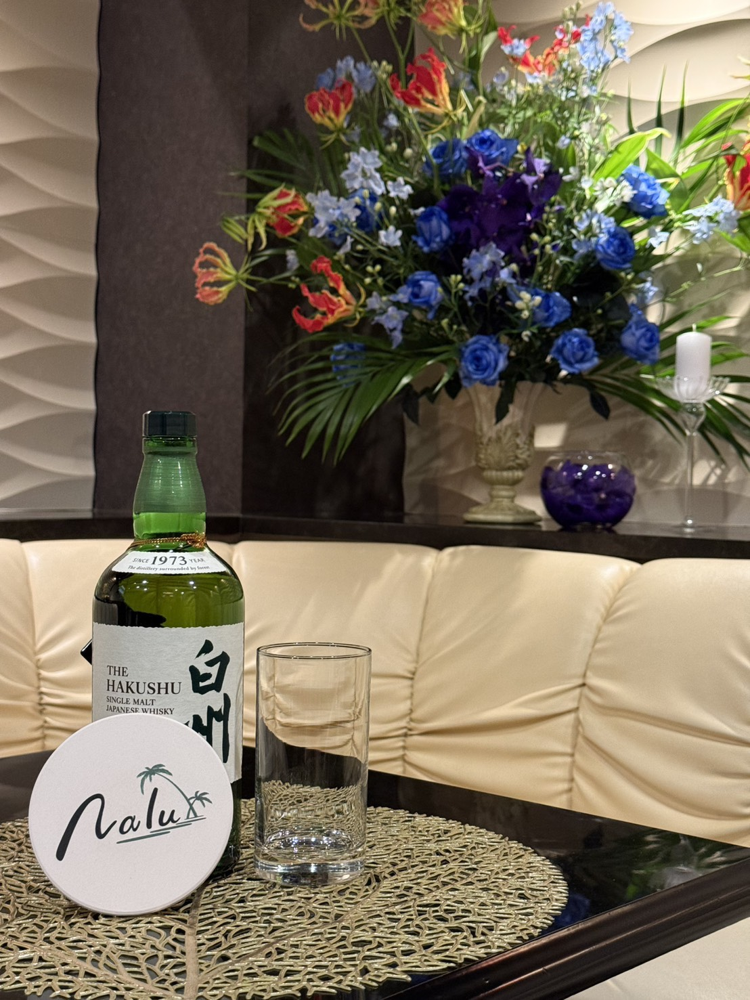

水戸・大工町で夜バイトを探している方へ
Lounge Nalu（ナル）は、落ち着いた大人のお客様が中心の、安心して働けるラウンジです。
夜のバイトが初めての方でも、ゆっくり慣れていける環境を大切にしています。
求人情報
水戸市大工町にあるラウンジ Nalu では、一緒に働いてくれるキャストを募集しています。
夜のバイト未経験の方でも、安心してスタートできるよう丁寧にサポートします。
募集内容
・夜のバイト未経験の方も歓迎します
・学生さん・Wワークの方も活躍中
・お酒が飲めなくても大丈夫
・ノルマ・罰金なし
・友達同士の応募もOK
水戸・大工町エリアで、落ち着いた雰囲気のラウンジを探している方にぴったりのお店です。
待遇
・時給：〇〇円〜（経験・能力により優遇）
・各種バックあり
・日払い相談可
・送りあり
・貸衣装あり（ワンピース等）
・シフト自由（週1〜月1でもOK）
応募方法
ご応募・ご相談は、下記のメールまたはSNSからお気軽にご連絡ください。
24時間受付しています。
・メール：nalu1114ryo@outlook.jp
・Instagram：〇〇〇〇
・LINE：〇〇〇〇
「まずは話だけ聞きたい」という方も大歓迎です。
ママからのメッセージ
Nalu は、夜のバイト未経験のキャストも多く在籍しているお店です。
無理に飲ませたり、厳しいノルマを課したりすることはありません。
落ち着いた大人のお客様が中心なので、安心して働ける環境です。
不安なことがあれば、いつでも相談してくださいね。
あなたのペースで、ゆっくり慣れていきましょう。
店内・キャストの雰囲気

お店の紹介
Lounge Nalu は、水戸市大工町にある落ち着いた雰囲気のラウンジです。
紹介制・会員制を基本としており、常連のお客様が中心です。
ゆったりとした空間で、無理なく働ける環境づくりを大切にしています。
店舗情報
営業日：月〜土
営業時間：20:00〜LAST
住所：水戸市泉町3丁目5-3 二番街ビル2階
よくある質問
Q. 週何日から働けますか？
A. シフトは自由制なので、週1〜月1の子もいます。
Q. 服装はどうすればいいですか？
A. 貸出衣装があります。自分で用意しても大丈夫です。ワンピース等でOKですが、パンツスタイルはNGです。
Q. 飲めなくても大丈夫ですか？
A. 無理に飲む必要はありません。
Q. 友達と応募できますか？
A. もちろん大歓迎です。
Q. 体験入店はできますか？
A. 可能です。まずはお気軽にご相談ください。
Q. どんなお客様が多いですか？
A. 落ち着いた大人のお客様が多く、常連の方が中心です。